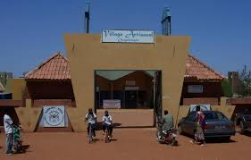

🎨DESCRIPTION DU VILLAGE ARTISANAL DE OUAGADOUGOU
Le Village Artisanal de Ouagadougou (VAO) est le principal centre de production, d'exposition et de vente d'artisanat d'art et utilitaire au Burkina Faso. Inauguré en 2000, cet espace rassemble plusieurs centaines d'artisans locaux maîtrisant des dizaines de métiers traditionnels et modernes.
- ➤La Boutique Centrale (Hall d'exposition)
- ➤Les Ateliers-Ventes (Les Cours)
- ➤Le Centre de Formation et d'Administration
Située à l'entrée, cette grande galerie climatisée regroupe une sélection des meilleures pièces de chaque artisan. Les prix y sont fixes et étiquetés. C'est l'endroit idéal pour apprécier la qualité globale de la production avant de s'enfoncer dans le village.
Le cœur vivant du VAO est divisé en plusieurs cours thématiques. Les artisans y travaillent quotidiennement sous les yeux des visiteurs. Chaque case abrite un métier spécifique (bronziers, tisserands, cordonniers, sculpteurs), permettant un échange direct avec le créateur.
Le VAO n'est pas qu'un marché. C'est un lieu de transmission où des apprentis viennent apprendre les métiers d'art auprès des maîtres artisans pour assurer la relève.
📜HISTORIQUE DU VILLAGE ARTISANAL DE OUAGADOUGOU
Le projet du Village Artisanal de Ouagadougou (VAO) est né au début des années 1990 de la volonté commune du gouvernement burkinabè et de la Coopération luxembourgeoise. L'objectif initial était de créer un espace moderne capable de structurer le secteur informel de l'artisanat, de former les créateurs et d'offrir une vitrine internationale aux savoir-faire locaux.
- ➤1997
- ➤23 octobre 2000
- ➤Évolution
Lancement officiel du projet de construction, pensé pour cohabiter avec le dynamisme du Salon International de l'Artisanat de Ouagadougou (SIAO).
Inauguration officielle et ouverture du site au public.
Conçu au départ comme un projet pilote d'aide au développement, le VAO s'est rapidement transformé en une structure autonome. Il est devenu un modèle de regroupement artisanal en Afrique de l'Ouest, inspirant d'autres centres culturels de la région.
En somme, le Village Artisanal de Ouagadougou est un lieu important de promotion de l’artisanat burkinabè. Il contribue à la préservation des traditions culturelles tout en soutenant le développement économique des artisans.
- Emplacement: situé sur le Boulevard des Tansoba près du SIAO
- Horaires: Tous les jours 8h00 à 18h00
- Accès: libre et gratuit
- Géolocalisation: Voir la localisation sur Google Maps